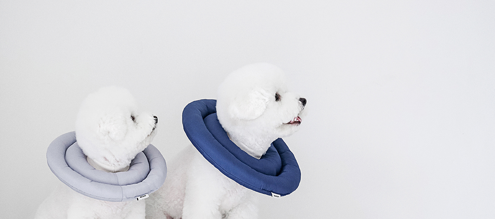
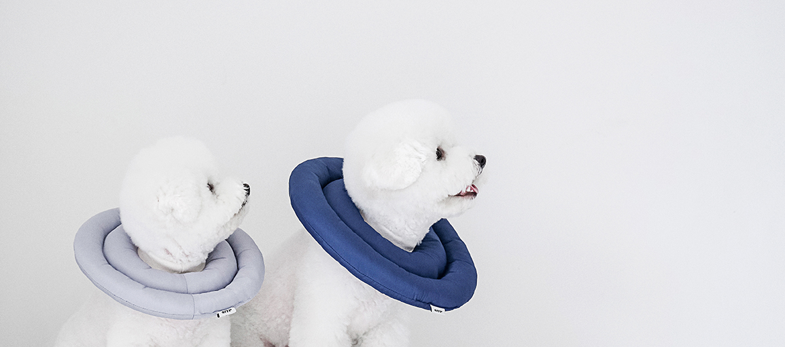

WHAT I MADE
스타트업 브랜드인 ‘아르르’의 홈페이지를 반응형 웹으로 리뉴얼 해보았습니다.
반응형 웹인 만큼 어느 디바이스에서든 쉽고 빠르게 접근이 가능합니다.
- 이미지 강조
- 독특한 레이아웃
- 심플
WHAT I MADE
스타트업 브랜드인 ‘아르르’의 홈페이지를 반응형 웹으로 리뉴얼 해보았습니다.
반응형 웹인 만큼 어느 디바이스에서든 쉽고 빠르게 접근이 가능합니다.
친환경 소재를 사용하는 브랜트의 특성을 고려하여 깨끗한 컬러 위주로 구성하였고,
포인트 컬러는 애견 용품 사이트 특성을 살려 사랑스럽고 따뜻한 컬러를 사용하였습니다.
주 타겟층이 대표 상품 몇가지의 SNS 홍보를 통해 유입되는 고객들이기 때문에
대표 상품의 이미지를 강조했고, 독특한 레이아웃을 사용하여 심플하면서도
지루하지만은 않은- 재밌는 형태로 디자인하였습니다.
대표상품의 이미지를 강조하기 위해 window screen size 에 따라 이미지 컨텐츠 width 값과 이미지 이외의 컨텐츠 height 값을 퍼센트로 주어 레이아웃이 변경되게 퍼블리싱 하였습니다.
이미지의 레이아웃이 계속 변화됨에 따라 복잡해지는 전체 화면에 안정감을 주기 위하여, 왼쪽에 위치한 사이드바에 position fixed를 사용하여 window height 에 맞게 고정시키는 효과를 주었습니다.
여기에서 재미있는 부분은- 이 사이드바가 footer 를 만났을 때 position 값이 absolute 로 변화되면서, 더이상 사이드바의 height 값이 window height 값과 동일하지 않고, footer height 값을 제외한 window height 값이 된다는 것입니다!
상품 상세페이지에서는 구입을 돕는 옵션선택 컨텐츠에도 position fixed를 주어 고객들의 사용성을 해치지 않는 것에 포커스를 두었습니다. 옵션선택창과 상세정보 창은 margin-right 를 사용하여 스크린 밖으로 숨겨두었다가, 클릭시 오른쪽에서 왼쪽으로 나타나는 효과를 주었고, 장바구니 창 역시 margin-left 를 사용하여 스크린 밖에 숨겨두었다가, 클릭 시에 왼쪽에서 오른쪽으로 나타나게 하였습니다.
반응형 웹 작업이 처음(사실 이 포트폴리오에 작업된 모든 것이 처음)이라, 퍼블리싱에서 시행착오가 많았습니다.
머리 속에 그려지는 내용들을 포토샵에 옮기고 웹 상에서 구현되게 하는 것 자체가 저에겐 쉽지 않았습니다.
세상에! 무슨 스크린 사이즈가 이토록 다양한지.. 스크린 사이즈에 통일성이 있으면 좋겠다는 생각이 든 작업이었어요.